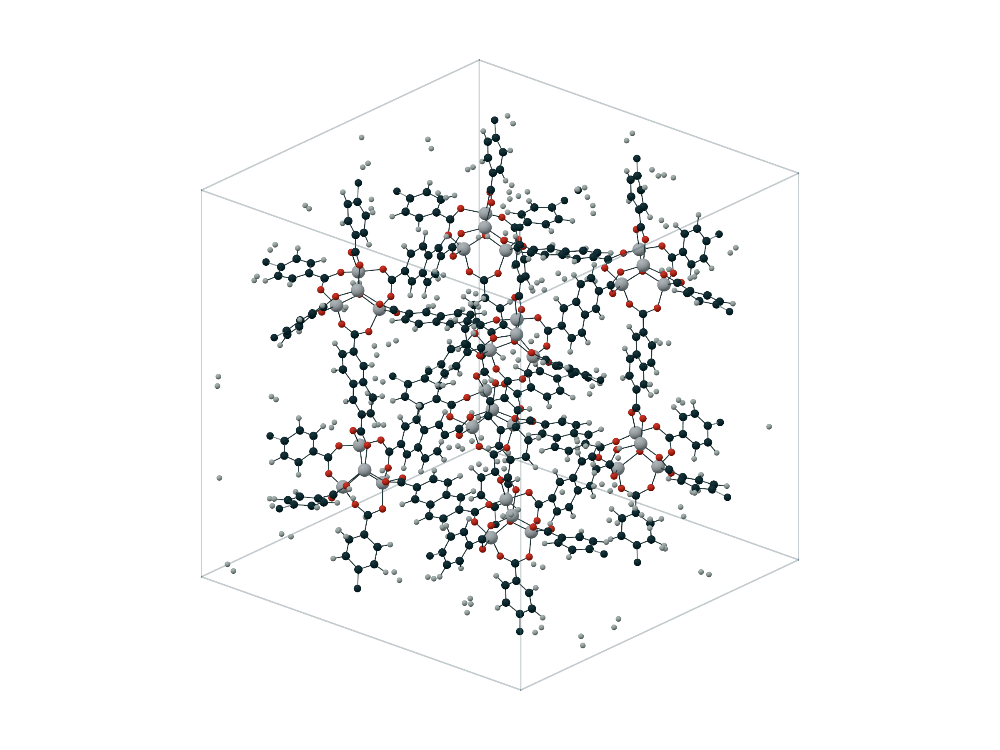
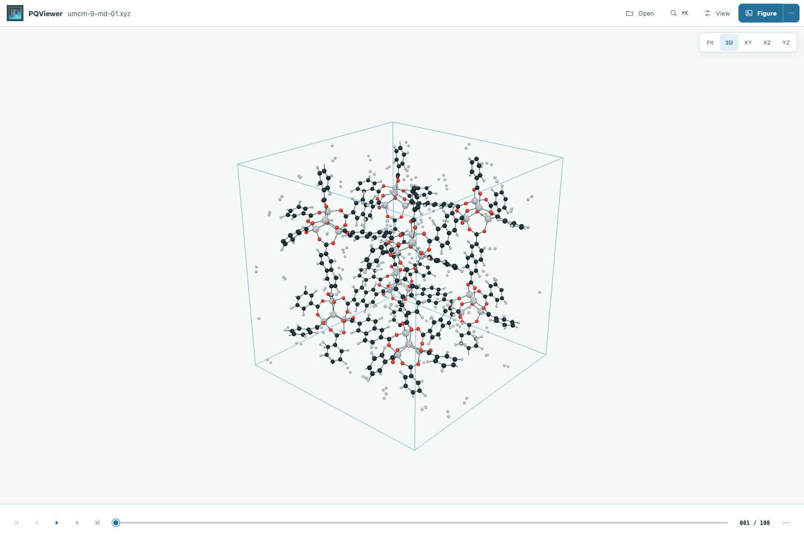
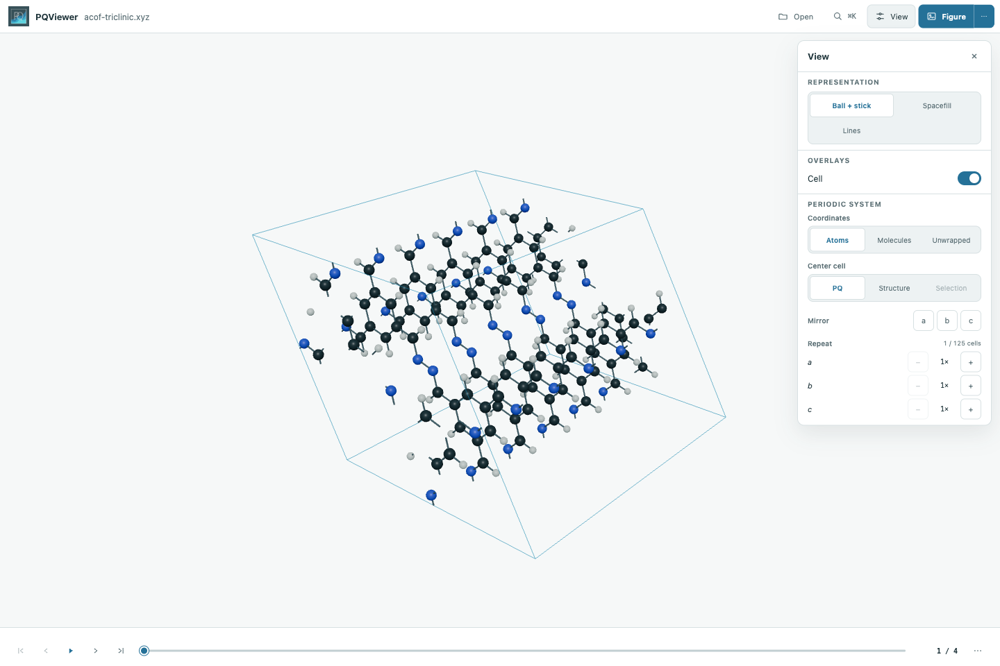
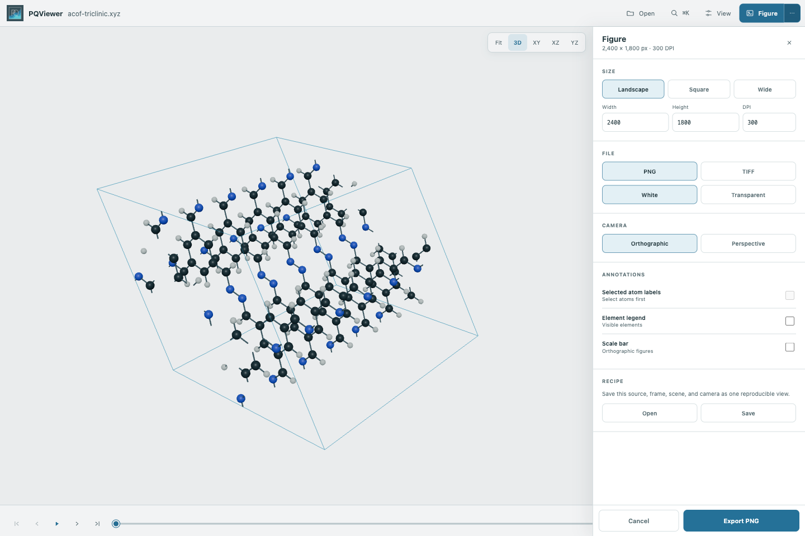
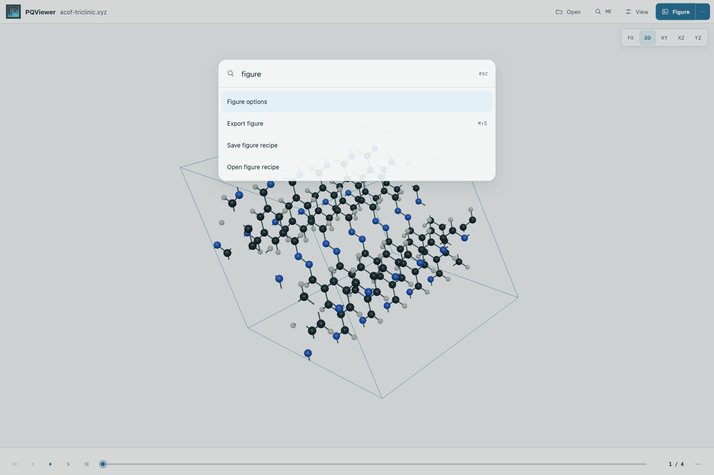

Structure · trajectory · figure
Molecular trajectories, made legible.
PQViewer brings the familiar speed of a scientific structure viewer into a calm, modern workspace built for the PQ ecosystem.

- 100
- trajectory frames
- 809
- atoms per frame
- 300
- DPI figure output
The workspace
The trajectory stays central.
Open a structure, run directory, or long trajectory. Playback, camera controls, frame count, and figure export stay visible without turning the molecule into a dashboard.

Different matter, one viewer
From one molecule to a periodic framework.
The same rendering path handles biomolecules, isolated structures, liquids, crystals, covalent frameworks, and MOFs.
Periodic systems
The cell behaves like a scientific object.
PQViewer respects PQ's centred fractional convention,
[-½, ½). Wrap atoms or whole molecules, move the
displayed cell, mirror axes, and repeat images without changing the
source trajectory.

Publication figures
The result is part of the workflow.
Set physical size, DPI, projection, background, labels, legend, and scale bar. Export PNG or TIFF, then save the complete view as a source-validated recipe for repeatable rendering.
Figure guide

Keyboard first
Search the action, not the menu.
Press ⌘K or Ctrl K to find display, selection, trajectory, measurement, analysis, and figure actions. Direct shortcuts remain available for repetitive work.
Viewer guideA short path to an answer
Open. Inspect. Publish.
-
01
Open the real run
Load PQ inputs, run directories, XYZ trajectories, ASE files, or selected frame slices from the command line or Python.
-
02
Inspect the trajectory
Play, select, measure, track, compare, and calculate structural curves through the PQAnalysis core.
-
03
Publish the same view
Export high-resolution figures or save a recipe and render it again from the command line.
python -m pip install .
pqviewer trajectory.xyzReference